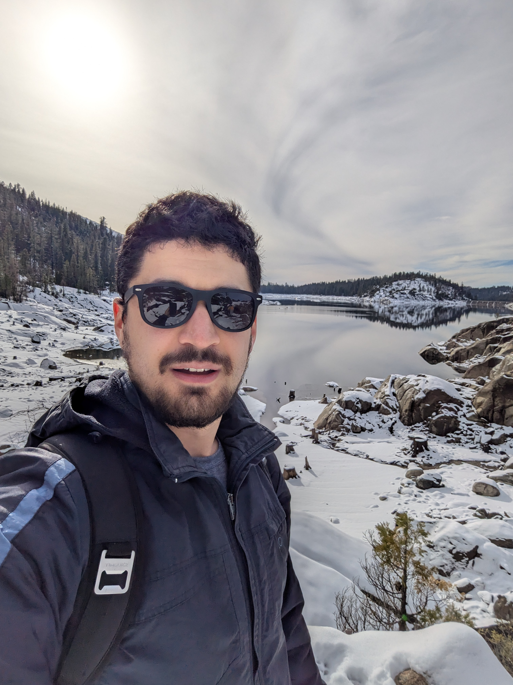

Rasul Kairgeldin
PhD CandidateElectrical Engineering and Computer Science (EECS)
School of Engineering
University of California, Merced
5200 N. Lake Road
Merced, CA 95343
Email: rkairgeldin [at] ucmerced.edu
WWW: http://rkairgeldin.github.io
|  |
Rasul KairgeldinPhD CandidateElectrical Engineering and Computer Science (EECS) School of Engineering University of California, Merced 5200 N. Lake Road Merced, CA 95343 Email: rkairgeldin [at] ucmerced.edu WWW: http://rkairgeldin.github.io |
I am a 4th year PhD candidate at University of California, Merced (UCM) supervised by Miguel Á. Carreira-Perpiñán. I hold a MSc in Computer Engineering and BEng in Electrical and Electronic Engineering from NU in Astana, Kazakhstan. You can find my CV [here] .
[ICIP] R. Kairgeldin and M. Á. Carreira-Perpiñán (2025): "Fast image vector quantization using sparse oblique regression trees".
IEEE International Conference on Image Processing (ICIP 2025), Sep. 14 - 18, 2025.
[external link]
[paper preprint]
[slides]
[video]
[poster]
[NeSy] R. Kairgeldin and M. Á. Carreira-Perpiñán (2025): "Neurosymbolic models based on hybrids of convolutional neural networks and decision trees".
19th International Conference on Neurosymbolic Learning and Reasoning (NeSy 2025), Sep. 8 - 10, 2025.
[external link]
[external link2]
[paper preprint]
[slides]
[poster]
[KDD] R. Kairgeldin and M. Á. Carreira-Perpiñán (2024): "Bivariate decision trees: smaller, interpretable, more accurate".
Proceedings of the 30th ACM SIGKDD Conference on Knowledge Discovery and Data Mining (KDD 2024), Aug. 25 - 29, 2024.
[external link]
[paper preprint]
[slides]
[video]
[poster]
[Workshop at NeurIPS] R. Kairgeldin and M. Á. Carreira-Perpiñán (2024): "Bivariate decision trees: smaller, interpretable, more accurate".
Workshop on Interpretable AI: Past, Present and Future (NeurIPS 2024), Dec. 15, 2024.
[external link]
[paper preprint]
[poster]
[UAI] R. Kairgeldin and M. Gabidolla and M. Á. Carreira-Perpiñán (2024): "Adaptive Softmax Trees for Many-Class Classification".
40th Conference on Uncertainty in Artificial Intelligence (UAI 2024), July 15 - 19, 2024.
[external link]
[external link2]
[paper preprint]
[poster]
[BayLearn] R. Kairgeldin and M. Gabidolla and M. Á. Carreira-Perpiñán (2024): "Adaptive Softmax Trees for Many-Class Classification".
Bay Area Machine Learning Symposium (BayLearn 2024), Oct. 10, 2024
[external link]
[paper preprint]
[poster]
[BayLearn] R. Kairgeldin and M. Á. Carreira-Perpiñán (2023): "Bivariate decision trees".
Bay Area Machine Learning Symposium (BayLearn 2023), Oct. 19, 2023
[external link]
[paper preprint]
[poster]
PhD ML Engineering Intern (Ranking & Foundational AI) at Meta. Worked on user and ad embedding learning for large Deep Recommender Systems. Mentors: Dave Li.
PhD ML Engineering Intern (Core ML) at Meta. Worked on compressing and accelerating Deep Recommender Systems on next-generation Meta Training and Inference Accelerator (MTIA). Mentors: Deboleena Roy.